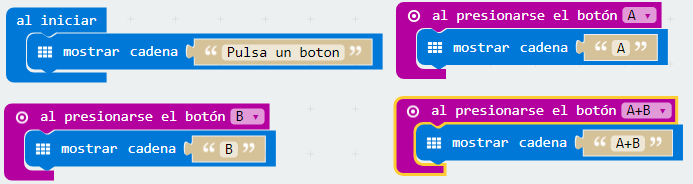

Reto 8 ¿Qué botón has pulsado?
A veces puede interesar usar un pulsador para iniciar, pausar o detener un código o subrutina. Algunos robots incorporan botoneras para esta finalidad.
Objetivo.
Crear un programa que muestre en pantalla la letra del pulsador que se ha accionado.
Pruébalo aquí:
Descripción del código.
Se usará el bloque al iniciar para que al principio se muestre el texto “Pulsa un botón”. La micro:BIT no muestra caracteres acentuados, por lo que dejará un hueco si se pone la tilde en la palabra botón.
Posteriormente se usará el evento al presionar el botón A y se introducirá el bloque mostrar cadena donde se sustituirá el texto por defecto por la letra “A”.
Esto mismo se repetirá cuando se pulsa el botón B y la pulsación combinada de A+B.
El código quedaría de la siguiente forma:

Propuesta.
Crear una caja de música. Al pulsar el botón A haga hará sonar una melodía. El bloque necesario para hacer sonar una melodía se encuentra en la categoría Música.

Micro:bit por José Francisco Muñoz Fernández y bajo licencia Creative Commons Reconocimiento-NoComercial-CompartirIgual 4.0 Internacional License.